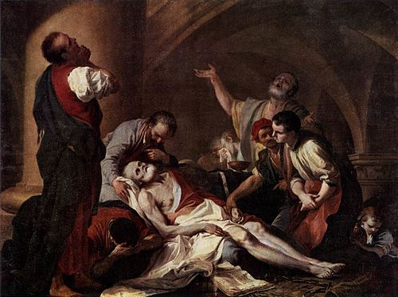
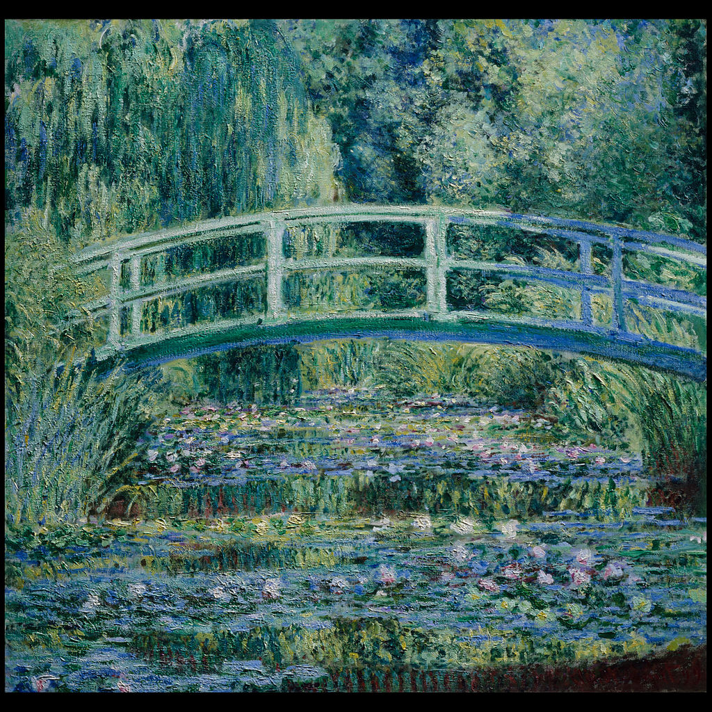

Información General
Ubicación: Nueva York, EE. UU.
Horario: 10:00 - 17:30
Precio: $30 USD
Colecciones Destacadas
- La muerte de Sócrates
- Retrato de Madame X
- El Estanque de Ninfeas
Historia y Arquitectura
Fundado en 1870, el Met es uno de los museos más grandes del mundo. Su edificio neoclásico en la Quinta Avenida alberga más de dos millones de obras que representan 5,000 años de historia artística.

Obra:La muerte de Sócrates

Obra:Retrato de Madame X

Obra: VEl Estanque de Ninfeas